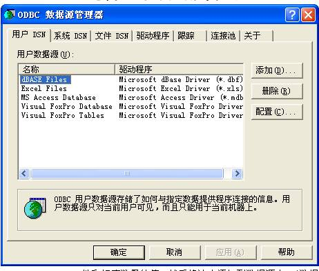

补充一下子本书中第三篇项目实践中工具和服务器选择的相关细节：
选择了NetBeans和Tomcat服务器，并且完成环境的组建。
首先，确保机器上安装了NetBeans,并且JDK环境变量配置正确
（JDK环境路径配置 java_home ：Java\jdk1.6.0_07；path：Java\jdk1.6.0_07\bin；classpath: Java\jdk1.6.0_07\lib。
JDK 是整个Java的核心，包括了Java运行环境（Java Runtime Envirnment），一堆Java工具和Java基础的类库(rt.jar)。）
其次，确保机器上已经安装了Tomcat，并且Tomcat环境的配置正确。
（Tomcat :环境路径的配置JAVA_HOME(JDK)；
CATALINA_HOME(tomcat的bin/lib等所在的文件的根目录)。
在path里配置tomcat\bin所在的路径（tomcat所需要的资源文件的目录）。
在终端启动tomcat的命令：startup.bat run
结束命令：shutdowm.bat或者ctr+c
访问路径：http://localhost:8080/）
再次，选择的数据库工具是Microsoft.office Access,连接桥是“sun.jdbc.odbc.JdbcOdbcDriver”数据源，先在数据库工具中创建四个表，学生，课程，选课，管理员，并设置好个字段的属性和相应数量的值，然后将该表添加到数据源中。（数据源每个windows环境下都配有，而且有对应的Aceess类型，只要选择刚刚创建的表，添加进去就行。

注意选择“系统DSN”，后再点击“添加”。
结束————————————
感谢您的阅读！